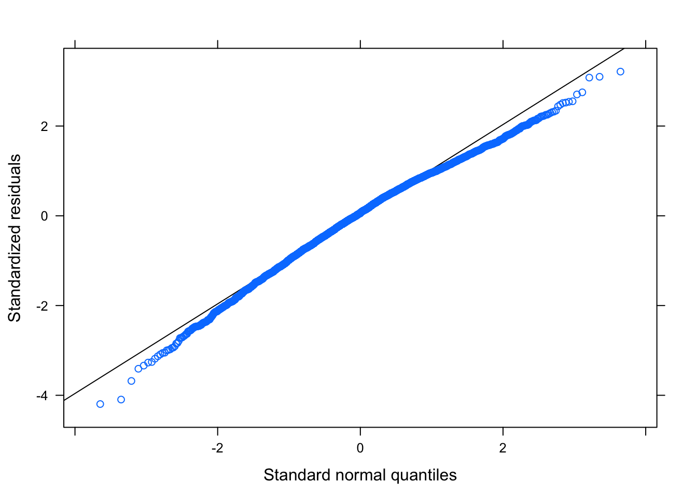
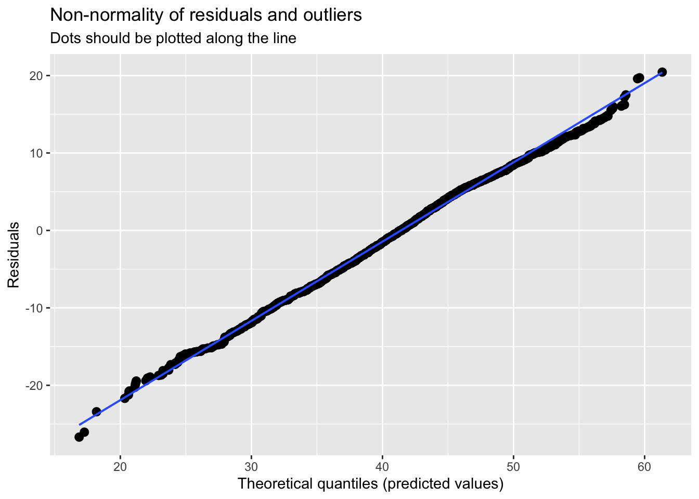
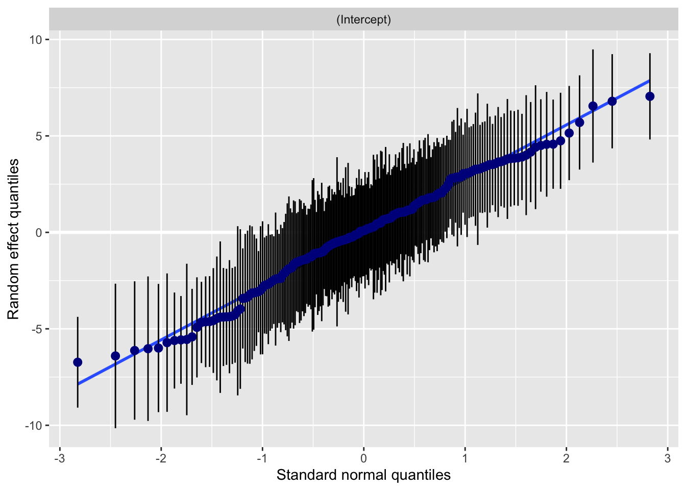
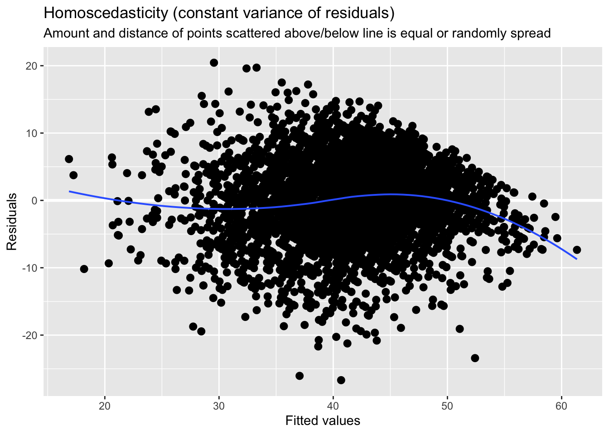
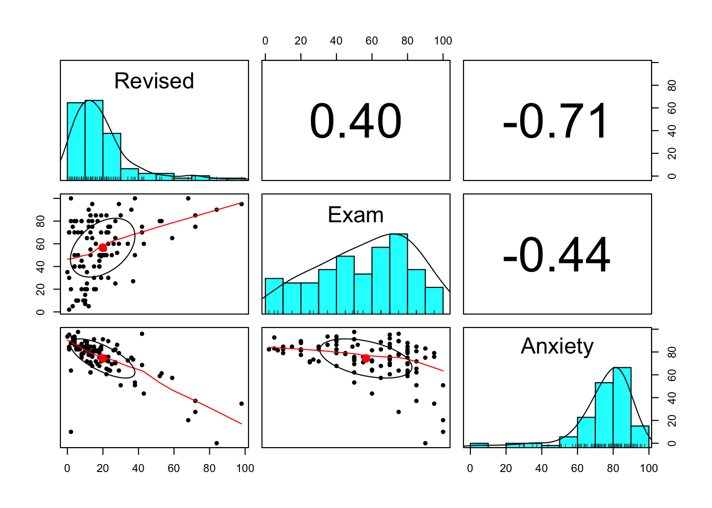
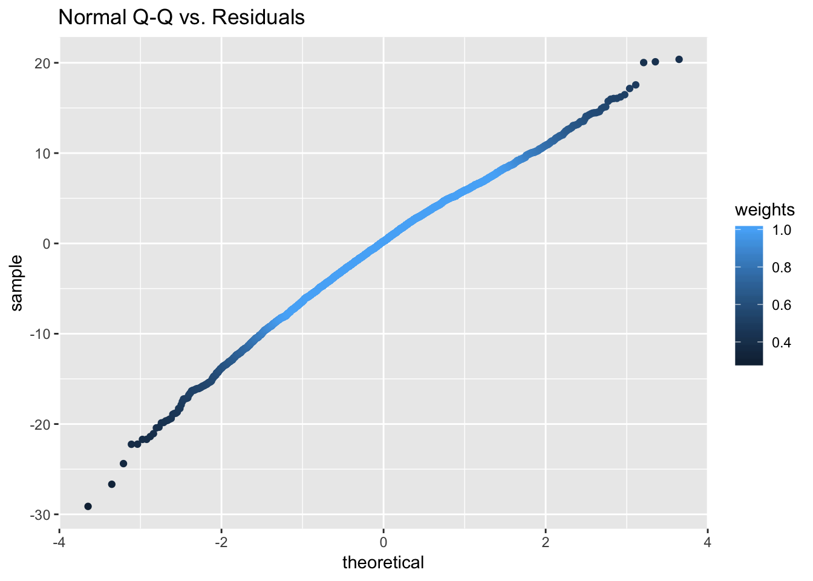
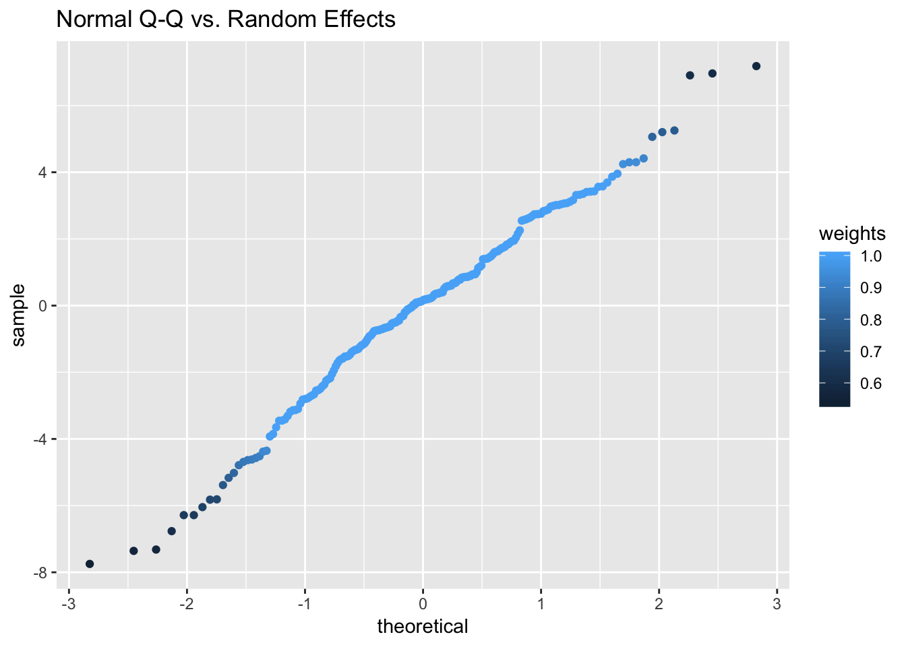

Chapter 5 Testing the assumptions
When it comes to checking assumptions in linear mixed models, we are pretty much looking for the same things and are concerned with the behavior of the error term. Consequently, we want to check for homoscedasiticity of the error term as well as normality of the error term’s distribution. We also want to make sure there is no auto correlation. We will provide you with code that can be used to test those but what will vary of course is that depending on which dataset you use, you may find yourself with violations of certain assumptions. Bare in mind as well as the estimation here is based on MLE.
Let’s work with the example we had earlier. I would like to work with the schools data again and check that the assumptions are satisfied.
Crucially, we care about:
- Linearity
- Normality of the residuals
- Homogeneity of residual variance (homoscedasticity)
- No autoccorelation and no multicolinearity
Luckily, there are quite a few packages out there that can get out nice plots without much effort, including those that are inbuilt in lme4 package.
#Check for linearity
linearity<-plot(resid(model_schools_IQ),#extract the residuals
schools$lang_score) #specify original y variable
#Check for normality
qqmath(model_schools_IQ)
These are just few examples of sort of in built ways but I want to share with you something which does much greater job in one go. We will use package sjPlot, just to note quickly, this package tend to get updated from time to time so some functions may change but I am confident people will keep updating it to add more features:
#We ll need few packages
library(effects)
library(sjPlot)
#Try with model_plot (argument for type can be varied)
plot_model(model_schools_IQ, type='diag') # you can ajust type (see package info: ?plot_model)## [[1]]
##
## [[2]]
## [[2]]$school
##
##
## [[3]]
##
## [[4]]
We might be mostly happy here, but I personally not convinced that homescedasticity was satisfied. Lets treat this formally, whilst we are here:
library(robustlmm)
#Reestimate the model with robust errors
model_schools_IQ_robust <- rlmer(lang_score ~ IQ_verb + (1|school), data = schools)
#Remember the old model
model_schools_IQ <- lmer(lang_score ~ IQ_verb + (1|school), data = schools)#Summary (before)
summary(model_schools_IQ)## Linear mixed model fit by REML ['lmerMod']
## Formula: lang_score ~ IQ_verb + (1 | school)
## Data: schools
##
## REML criterion at convergence: 24917.1
##
## Scaled residuals:
## Min 1Q Median 3Q Max
## -4.1952 -0.6378 0.0659 0.7098 3.2132
##
## Random effects:
## Groups Name Variance Std.Dev.
## school (Intercept) 9.909 3.148
## Residual 40.479 6.362
## Number of obs: 3758, groups: school, 211
##
## Fixed effects:
## Estimate Std. Error t value
## (Intercept) 41.05442 0.24402 168.24
## IQ_verb 2.50722 0.05439 46.09
##
## Correlation of Fixed Effects:
## (Intr)
## IQ_verb 0.003Note a slight change in the estimates and standard errors.
#Summary(robust)
summary(model_schools_IQ_robust)## Robust linear mixed model fit by DAStau
## Formula: lang_score ~ IQ_verb + (1 | school)
## Data: schools
##
## Scaled residuals:
## Min 1Q Median 3Q Max
## -4.5850 -0.6589 0.0366 0.6654 3.2090
##
## Random effects:
## Groups Name Variance Std.Dev.
## school (Intercept) 9.561 3.092
## Residual 40.340 6.351
## Number of obs: 3758, groups: school, 211
##
## Fixed effects:
## Estimate Std. Error t value
## (Intercept) 41.34622 0.24666 167.63
## IQ_verb 2.52844 0.05566 45.42
##
## Correlation of Fixed Effects:
## (Intr)
## IQ_verb 0.003
##
## Robustness weights for the residuals:
## 3022 weights are ~= 1. The remaining 736 ones are summarized as
## Min. 1st Qu. Median Mean 3rd Qu. Max.
## 0.293 0.695 0.842 0.807 0.950 0.999
##
## Robustness weights for the random effects:
## 177 weights are ~= 1. The remaining 34 ones are summarized as
## Min. 1st Qu. Median Mean 3rd Qu. Max.
## 0.537 0.668 0.821 0.801 0.928 0.998
##
## Rho functions used for fitting:
## Residuals:
## eff: smoothed Huber (k = 1.345, s = 10)
## sig: smoothed Huber, Proposal II (k = 1.345, s = 10)
## Random Effects, variance component 1 (school):
## eff: smoothed Huber (k = 1.345, s = 10)
## vcp: smoothed Huber, Proposal II (k = 1.345, s = 10)Lets check visually. Unfortunately, we cannot use plot_model() on rlmer object but there is a plot which comes with the package so we can still get some quick visualisations.
#Plot
plot(model_schools_IQ_robust)